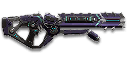

← Back to the VE-H Maw comparison
Sage Guide · Vanu Sovereignty · Heavy Assault
A 1,000-cert LMG for the Vanu Heavy Assault — the faction's hard-hitting answer to the Anchor. This page teaches you to win fights with it from your first magazine.
The one-line verdict: a hard-hitting, fast-handling LMG that plays like a big assault rifle with a bigger punch — 167-damage bullets, a 60-round magazine and a 3.45-second reload. It rewards good aim and short bursts, and punishes spray-and-pray. Fight between 10 and 40 metres and it will carry you.

The VE-H Maw · Vanu Sovereignty · 60-round magazine
Picture the scene, because you've probably lived it: you're sprinting across a courtyard, an enemy appears, and you do everything at once — hold the trigger down while you're still running, then press aim-down-sights (ADS) a split-second later, finger still down. The sight picture snaps in, it looks precise… and your bullets spray everywhere except the man in your crosshair. He kills you. It feels like the game cheated. It didn't — here's what actually happened.
You started firing from a sprint, from the hip. Sprinting is the least accurate state in the game: your cone of fire starts at 7.0° — fully bloomed, the widest it can ever be. Every shot you fire from the hip widens it further still (+0.12° per shot).
Then you pressed ADS mid-hold — and nothing reset. Aiming down sights does not shrink a cone of fire that is already bloomed. The scope only gives you a precise picture; the bullets keep flying out of the wide cone you built while running and hipfiring. That's the whole mystery: accurate-looking aim, wildly inaccurate gun.
Two timers stack the deck further: your gun needs about 0.3 s to settle after a sprint, and raising the sight itself takes ~0.15 s. Trigger held through all of it means your first half-second of fire is pure confetti.
1 · Feet. Let go of sprint (and the trigger, if you're already holding it). Stop, or drop into a strafe — anything but a full sprint.
2 · Sight. Press ADS and let the sight come up. This takes a heartbeat — that's fine, your overshield (F) covers it.
3 · Trigger. Now fire. Starting from the aimed cone of 0.03°, your first shots land where the dot points, and you control the bloom from zero instead of inheriting a maxed-out cone.
Stop → aim → fire. If you take one habit from this entire page, take this one. You'll practise exactly this rhythm in the simulator in section 04.
Read it left to right: sprint (7.0° cone) → trigger held while the sight comes up → bullets flying out of the wide cone you built, not out of the neat sight picture. The scope only changes what you see.
Stop → Aim → Fire, in that order, every time. The two timers are short — about half a second together — and your overshield (F) covers them. Rush any beat and you are back in the strip above.
Every enemy infantry has 1,000 health (500 shield + 500 health). Your bullet does 167 damage up close, fading to 125 at long range. You carry 60 rounds in the magazine and 300 in reserve. Headshots count double, leg shots count less (×0.9). That gives you three numbers worth memorising:
| Range | Damage | Head | Chest | Legs | Chest vs shielded Heavy |
|---|---|---|---|---|---|
| Close · 0–10 m | 167 | 3 | 6 | 7 | 9 |
| Mid · 10–47 m | 167→143 | 4 | 7 | 8 | 11 |
| Far · 47–75 m+ | 143→125 | 4 | 8 | 9 | 12 |
Perfect-accuracy times to kill: 3 headshots ≈ 0.20 s, 6 chest shots ≈ 0.50 s up close. In real fights you'll land maybe half your rounds — still, this is why the head matters so much on this gun.
Full power to 10 m, then a steady slide to minimum at 75 m. The teal line shows Soft Point Ammunition, which stretches full power to 15 m.
One gun, four fighting styles. The right technique changes with distance — use the range finder below to see what your bullets do at any range, then learn the four bands underneath it.
How to fight hereAim down sights at the upper chest and neck. Fire in bursts of 5–8 — your recoil climbs into the head for free damage.
Aim: centre of the chest, from the hip. Keep moving.
Scoping in costs you time and halves your move speed — at arm's length that gets you killed. The Maw has tight hipfire for an LMG (2.75° standing — tighter than the GD-22S's 3.0°). Strafe side to side (A/D) while firing so you're hard to track, and let the overshield soak the return fire.
Aim: neck / upper chest. Bursts of 5–8 rounds.
This is where the gun earns its keep: full 167 damage, mild recoil, fast handling. Start your crosshair at the neck — the natural upward climb walks your shots into the head, and 3 head hits end the fight in a fifth of a second. Strafe while scoped; you're slower, but a moving target still beats a still one.
Aim: chest. Bursts of 5–8 rounds, pause between them.
Damage is sliding toward 143 and your cone of fire blooms if you hold the trigger. Fire a burst, release for a split second to let accuracy reset, fire again. The recoil drifts up and to the right (15–20°), so pull your mouse gently down and to the left. Crouch or stand still when you can — both tighten your shots.
Aim: chest. Taps of 3–5 rounds at exposed targets only.
At 125 damage you need 8 chest hits — a long, loud advertisement of your position. Take these shots at stationary or fleeing targets, medics reviving, and engineers on turrets. Otherwise, your better play is to close the distance behind cover. Knowing when not to shoot is a skill too.
Your accuracy is decided by two things before skill even enters it: what your body is doing (your stance sets the starting cone of fire) and what your finger is doing (holding the trigger grows that cone with every shot). The VE-H Maw has no fire-mode switch — full-auto only — so "firing modes" are something you do with your finger, not a setting on the gun.
| Stance | Starting cone | What it means for you |
|---|---|---|
| Sprinting | 7.0° | Maxed out — the widest the cone can be. This is the section 01 disaster: never start firing from a sprint. |
| Hipfire, moving | 3.25° | Walking or strafing from the hip. Fine inside ~8 m, leaks rounds past the target beyond it. |
| Hipfire, standing | 2.75° | Your point-blank default. The 0.38 m ring at 8 m in section 05 is this stance drawn out. |
| Hipfire, crouched | 2.25° | The tightest hipfire you have (2.75° if you crouch-walk). Crouch when holding a doorway from the hip. |
| Aimed (ADS), feet planted | 0.03° | Standing or crouched makes no difference here — more than ninety times tighter than hipfire. This is why section 01's order matters. |
| Aimed (ADS), crouch-walking | 0.20° | Crouch-walking while aimed keeps the cone tight and your profile low — the steadiest way to peek a lane. |
| Aimed (ADS), strafing | 0.40° | Moving while aimed opens the cone to 0.40° — still about seven times tighter than standing hipfire — but you move at half speed (0.5×). Strafe between bursts to stay hard to hit; plant your feet during each burst. |
Recoil, by the numbers: 0.35° straight up per shot (0.88° on the first, thanks to the 2.5× multiplier), 0.175–0.195° sideways per shot, recovering at 18°/s when you stop firing. The sideways part is small per shot — it only hurts when you hold the trigger and let it accumulate.
| Mode | How your finger does it | Use it at |
|---|---|---|
| The mag dump | Hold the trigger and don't let go | Point blank only, or suppressing a doorway. Bloom maxes out fast — past ~8 rounds you're spraying, not aiming. |
| Bursts — the default | Hold for 5 rounds, release ~0.15 s, hold again. 6–8 rounds is fine while you're learning | Almost everything, 8–50 m. Each release resets the cone, so every burst starts at 0.03°. |
| Tap-fire | Short taps of 3–5, or single clicks, with a real pause between | 50 m and out, at exposed or stationary targets. Slow, but every round goes where the dot is. |
A target 30 m away, aiming down sights. Press and hold FIRE (mouse, touch, or hold Space with the button focused) and watch the holes walk wider the longer you hold — that's firing from an ever-growing cone. Release, let the cone reset, fire again. Aim for bursts of 5; 6–8 is tolerable while you're new. This practice window is shared by the whole Sage series: it's driven by a weapon profile plugged into the window — here the VE-H Maw's (600 RPM, 0.03° starting cone, 0.06° bloom per shot, target at 30 m) — and the spread is drawn at true scale from those numbers.
Cone of fire — fills as you hold, empties when you release.
Your bursts will be graded here — green at 5 rounds, tolerable up to 8.
Some things are easier to show than to say. Here's what your bullets actually do: how wide hipfire spreads at 8 metres, what a good burst rhythm looks like, and what the 2x sight really changes. The hands-on version — holding the trigger yourself — is the practice window in section 04.
A full-size target 8 m away — an arm's-length room fight. The rings show where hipfire rounds land around your aim point (the chest). Sizes are drawn to scale from the gun's real cone-of-fire numbers.
Read it this way: standing still, the 0.38 m ring sits comfortably inside the chest — most rounds hit a target this size, which is why hipfire works point-blank. But move and it grows to 0.45 m — about as wide as the torso — so the edge rounds start leaking past him, and the rings only grow with distance while the man doesn't. Past ~10 m that's rounds missing entirely: the exact moment to switch to aiming down sights, where the spread shrinks to a dot. (Ring sizes use the real geometry: spread diameter = 2 × distance × tan(cone ÷ 2).)
Every shot widens your cone of fire ("bloom"). Releasing the trigger for a heartbeat resets it. Same 18 rounds, two very different outcomes:
The target pattern is bursts of about 5 rounds — that's the ideal. Bursts of 6–8 are fine while you're new (call it newbie tolerance). Past that, the bloom (0.06° per shot aimed, 0.12° from the hip) keeps growing with every shot, so the extra bullets mostly decorate the wall behind your enemy instead of hitting him. Short bursts also leave you rounds for the second enemy — remember, the magazine is 60, not 100.
No zoom. The target at 35 m is small but the view is wide open — you see the crate, the tower, and the next enemy coming. Fast to aim, nothing blocks your edges. Best inside ~40 m.
Same target, same 35 m — but he looks twice as tall, so placing shots on his chest and head gets much easier. The price: your view narrows to the round window, the crate and tower are gone, and close targets feel fast and huge. Best at 25–50 m.
That's the whole 5-cert decision from section 06 in one picture: 1x for awareness, 2x for precision. Most veterans carry both and swap per base — indoors 1x, open ground 2x.
One honest warning up front: the Maw is a 1,000-cert gun, and unlike the faction starters it does not come with a Forward Grip — only the 1x sight is already on it. Everything below is still an optional sidegrade, not an upgrade: buy in the order shown and stop whenever the gun feels right. It has no suppressor and no extended magazine — Census lists neither for this gun, so don't go hunting for them.
A clean open-diamond reflex sight with no zoom. Your default, and honestly your best all-round option.
Good: everywhere indoors and out to ~40 m — which is most PlanetSide fights.
Bad: picking out targets past 50 m; that's what the 2x is for.
Doubles your view magnification. Costs almost nothing — the price of one kill or two.
Good: open-field bases, tower fights, and your 25–50 m burst game. Swap between 1x and 2x per fight.
Bad: tight indoor rooms — the zoom makes close targets feel fast and huge.
Infrared sight: enemies glow against a dark view, and it sees through smoke. It is the Maw's HS/NV equivalent — but it raises a touch slower (~0.1 s more to bring the sight up).
Good: night fights, smoky doorways, spotting infiltrators by their outline.
Bad: daytime and long range — its view is short-ranged and washes out in bright light.
Magnified Corona optics — sniper-style zoom on an automatic LMG.
Good: almost nothing a beginner does — recoil magnifies too, and tunnels your vision.
Bad: any fight inside 30 m, which is where you'll spend your first hundred hours.
The Maw's recoil is already manageable. Plenty of veterans run this slot empty forever.
Good: your first weeks. Spend certs on your suit and shield first.
Bad: nothing — there's no downside to an empty slot.
Cuts vertical recoil by 30% (0.35° → 0.25° per shot). Costs you: hipfire spread grows 15%, and enemies see you on the minimap from 35 m farther away when you fire.
Good: if you mostly aim down sights at mid-range and the upward climb bothers you.
Bad: hipfire builds and sneaky play — you get louder on the map and sloppier from the hip.
Hides your muzzle flash so your own view stays clear at night — but you appear on enemy minimaps from 15 m farther away. The Maw's flash-suppressor equivalent; it costs no damage or velocity.
Good: night fights where your own flash blinds you. A comfort pick, nothing more.
Bad: as an early purchase — it changes no fight outcome, and it is not a suppressor: there is no stealth barrel for this gun at all.
Hipfire bloom grows 40% slower — much steadier hip spraying. But vertical recoil rises 20% when you do aim.
Good: a dedicated close-quarters build paired with the Laser Sight.
Bad: general play — it taxes the aimed shooting you'll do most.
Cuts side-to-side recoil by 25%, keeping your bursts on a single target. Tiny cost: weapon swap is 0.15 s slower (1.1 s → 1.25 s). Not free on this gun — the starters get it included, the Maw doesn't.
Good: the default for aimed, mid-range play — buy it early and leave it on until you deliberately build for hipfire.
Bad: nothing meaningful. It only stops helping if you never aim down sights.
Hipfire accuracy improves by a third (33% tighter cone — standing hipfire drops to about 1.84°). Replaces the Forward Grip — you can't have both.
Good: indoor point-holds and stairwell fights where you hipfire inside 8 m — it stacks on already-tight hipfire.
Bad: open bases — you give up aimed recoil control for a bonus you rarely use.
The first shot of each burst kicks 60% less — but side-to-side recoil rises 10% on everything after it.
Good: disciplined burst and tap-fire at 25 m+, where every burst starts fresh. This matters more on the Maw than on most guns: its first-shot kick is 2.5× (0.35° → 0.88°).
Bad: long mag dumps — the sideways penalty is paid on every shot after the first.
The Maw's exclusive rail: an empty magazine reloads at the short speed (4.6 s → 3.45 s) — the long-reload penalty is gone. In exchange the recoil angle widens by 5° (15–20° → 20–25°), so bursts walk further sideways.
Good: if you keep running the magazine dry in chaotic multi-kill fights and hate the 4.6 s empty reload.
Bad: aimed mid-range play — the wider recoil angle fights the accuracy you bought the gun for. Reload early instead (habit 4) and you get the benefit for free.
A torch whose beam reveals cloaked infiltrators. Toggle it with the attachment key (X by default).
Good: hunting a stalker infiltrator camping your capture point — sweep corners with it.
Bad: as your everyday rail — it gives zero accuracy help, and the beam advertises your position.
Full 167 damage now reaches to 15 m instead of 10 m (the teal line on the chart above). Cost: bullets fly 10% slower (550 → 495 m/s).
Good: nearly always — most duels happen at 10–20 m, exactly where this extends your 6-shot / 3-headshot kill.
Bad: long-range duels against runners, where the slower bullet needs more lead. A small price.
Your projectiles get much bigger, so near-misses become hits — but headshots drop from ×2 to ×1.2 damage. Up close a headshot kill goes from 3 hits to 5.
Good: a dedicated hipfire build (with the Laser Sight), where body hits are the plan and the bigger bullets forgive shaky aim.
Bad: any build that aims for the head — it throws away the single biggest damage upgrade you own, for free, in section 08.
Attachment costs only — the gun itself is a separate 1,000-cert purchase (699 Daybreak Cash).
0 certs · Day one
The bare gun, exactly as 1,000 certs buys it. Still a 167-damage hammer — learn it on this before spending anything more.
205 certs · Recommended
The best value in this whole guide. Covers every fight from a doorway to a tower courtyard.
200 certs · Indoor brawler
Built to hipfire down stairwells and hold a capture point room. Swap back to the All-Rounder outdoors.
300 certs · Hipfire specialist
The fattest bullets and tightest hipfire this gun can make — near-misses become hits inside 8 m. Never aim for the head on this build: Unstable Ammo cuts headshots to ×1.2. There is no suppressor-flanker build for the Maw, so this is the closest thing to a specialist setup.
Your overshield (F key) is extra health that only helps if it's on before the bullets arrive. Hear footsteps or expect a corner? Shield up, then peek. A shielded Heavy needs 9 chest shots to drop up close instead of 6 — that gap wins duels.
Headshots deal double damage: 3 kills up close versus 6 to the chest. Don't aim at the head directly — aim at the neck and let the gun's natural upward climb carry shots two and three into the skull. It's the single biggest damage upgrade you own, and it's free.
Every shot widens your cone of fire. Holding the trigger past ~8 rounds at range means later bullets fly around your target, not into it. Five rounds is the ideal burst; release the trigger for a heartbeat between bursts — your accuracy resets and your hits per magazine roughly double.
Reloading with even 1 bullet left takes 3.45 s; an empty gun takes 4.6 s — an eternity mid-fight. Count roughly: after two kills or ~40 rounds, duck behind cover and reload early. Treat the last 10 rounds as your emergency reserve, not your working magazine.
Walk with your crosshair at head height, pointed where an enemy's head will appear — a doorway edge, a corner, stairs. Most beginners lose fights in the half-second spent dragging the crosshair onto target. While firing, tap A/D to strafe: a moving Heavy is dramatically harder to headshot back.
Your damage, accuracy and shield all shine at close-mid range. Sprint between cover, use buildings and rocks as stepping stones, and arrive at your range before opening fire. The player who chooses the range usually wins the duel — make it you.
Every gun has a price. Here's where the VE-H Maw pays — and the habit that covers each hole.
600 RPM is slow for an LMG. The VS Orion and TR CARV both fire 750 RPM — if you and an enemy Heavy trade chest shots face-to-face, their bullets add up faster than yours: 0.48 s to your 0.50 s.
Play around it: don't trade fairly. Shield first, aim for the neck, and use corners — your per-bullet damage and accuracy win fights that start on your terms. And 20 ms is a small gap: one headshot erases it.
The CARV carries 100 and the XMG-100 carries 80. Your 60 vanish fast when suppressing a doorway, there's no extended-magazine option on this gun at all, and the reload is 3.45 s with rounds left (4.6 s on empty) — the GD-22S reloads in 2.3 s.
Play around it: burst discipline (habit 3) and early reloads (habit 4). Never let it run dry in the open — the empty reload is where this gun's fights are lost.
Past 75 m you're at 125 damage: 8 chest shots, 12 against a shielded Heavy, with bloom fighting you the whole way. Snipers and battle rifles own that ground.
Play around it: tap-fire at exposed targets only, and spend the rest of the time closing distance. You're a Heavy — the front line is your address.
Its first-shot recoil multiplier is 2.5× — the first round jumps 0.88° before the burst even starts — and the recoil angle runs 15–20° up-right. In a long burst your aim walks off the target's right shoulder, and the Vented Power Core makes the angle wider still.
Play around it: pull your mouse down-left while firing, in the opposite direction of the climb. The Forward Grip already trims the sideways part by 25%, and the Angled Forward Grip cuts that first kick by 60%.
Like all LMGs, you move at half speed while aiming down sights (0.5x), and the gun takes 1.1 s to swap to — 1.25 s with the Forward Grip fitted — slow if a fight surprises you with your rocket launcher out.
Play around it: hipfire inside 8 m instead of scoping (that's the Point Hold build's whole idea), and swap weapons behind cover, never in the open.
Open the world map, travel to VR Training, and run these on the target dummies. Five minutes before a play session beats an hour of dying confused.
Aim at a wall 20 m away and empty a full magazine without touching the mouse. Watch the bullet pattern climb up-right at 15–20° — and notice the big first jump, that's the 2.5× first-shot kick. Repeat, this time pulling down-left, until the group stays fist-sized.
Walk the dummy range keeping your crosshair glued to neck height the whole time, snapping to each new target without dipping to the floor or sky. Slow and clean first; speed comes on its own.
At 30–40 m, kill dummies with bursts of 5–8, releasing the trigger fully between bursts. If a burst goes wide, shorten it. Goal: whole kills without a single wild round.
Pick a dummy, stand 5 m away, and circle it with A/D while hipfiring it down without stopping. This is your point-blank survival skill — the one that fires while your shield and movement do the defending.
Fire exactly 40 rounds, step behind a pillar, reload, repeat. Train your hands to reload early and only in cover until it's automatic — in real fights you'll do it without thinking, which is the point. Never practise running the magazine dry: the 4.6 s empty reload is the habit you're unlearning.